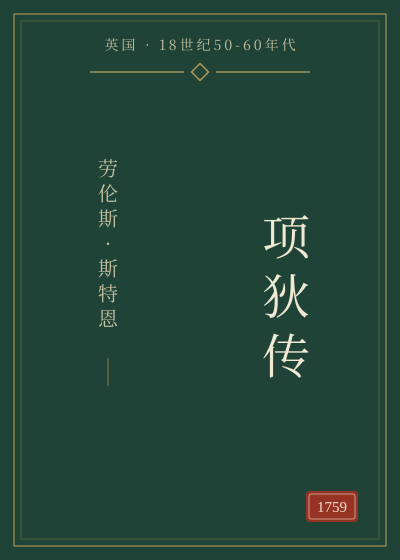
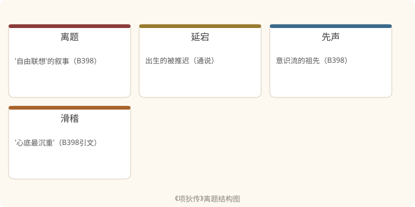

项狄传
一、基本信息
| 作者 | 劳伦斯·斯特恩 |
|---|---|
| 成书/出版 | 1759-67年（Britannica B398：九卷——'a novel in which story is subordinate to the free associations and digressions of its narrator'） Laurence Sterne — Encyclopaedia Britannica（百科全书） |
| 国别/地区 | 英国 |
| 时代 | 近代 · 18世纪50-60年代 |
| 体裁 | 长篇小说（九卷） |
| 语言 | 英语 |

《项狄传》离题结构图（主题·结构图）
二、创作背景
Britannica（B398）：'a novel in which story is subordinate to the free associations and digressions of its narrator'（故事从属于叙述者的自由联想与离题）。
Britannica（B398）：洛克心理学影响——'forerunner of psychological and stream-of-consciousness fiction'（心理小说与意识流小说的先声）。
Britannica（B398）：前两卷自费于约克出版（1759年末）；斯特恩自言每句都'written under the greatest heaviness of heart'。
三、内容脉络
（通说待核——B398未载剧情）'项狄'的出生被叙述延宕：名字、鼻子与'窗户'。
（通说待核）'墨迹页'与'黑页'的实验（通说待核——B398未载）。
四、主要人物表
| 人物 | 身份 | 说明 |
|---|---|---|
| 特里斯特拉姆 | 未出生的主角 | （B398 书名人物） |
| 托比叔叔 | 伤腿的叔叔 | （通说待核） |
五、主题与艺术特点
- '故事从属于联想与离题'（B398）。
- '意识流小说的先声'（B398：forerunner）。
- '心底最沉重'的滑稽（B398 引文）。
六、影响与评论
- Britannica：'forerunner of psychological and stream-of-consciousness fiction'（B398）。
Laurence Sterne — Encyclopaedia Britannica（百科全书） - Britannica：'story is subordinate to...digressions'（B398）。
Laurence Sterne — Encyclopaedia Britannica（百科全书）
七、阅读建议
难点
- 离题的结构（无'故事线'）。
- 十八世纪讽刺语境。
- 《项狄传》中译本（人民文学/上海译文等——通说待核）。
- 英文原版（公有领域）。
斯特恩代表作；与《感伤旅行》对读。
八、待核实
- 九卷年份核对（B398：1759-67）。
- '墨迹页/黑页'实验核对（通说——B398未载）。
- 托比叔叔细节待核。
本页主要来源
劳伦斯·斯特恩的其他收录作品：项狄传